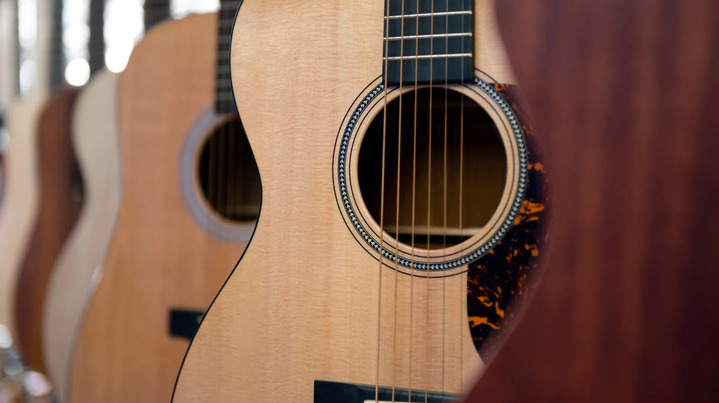

Guía de compra: ¿Cuál es la guitarra ideal para iniciar en la música?

Elegir tu primer instrumento es una decisión clave. En Sonido Vivo contamos con modelos diseñados para garantizar una excelente comodidad y sonido desde el primer día.
1. Para amantes del sonido acústico: Yamaha F310
Si buscas un tono cálido y resonante sin necesidad de amplificador,
la Yamaha F310 es la opción predilecta. Su tapa de abeto y
mástil ergonómico facilitan el aprendizaje de acordes básicos. Si
prefieres cuerdas de nailon, la clásica Yamaha C40 es otra
alternativa de estudio muy recomendada.
2. Para explorar el rock y pop: Squier Affinity
Stratocaster
Si lo tuyo es la guitarra eléctrica, la
Squier Affinity Strat ofrece la versatilidad de 3 pastillas
individuales para obtener tonos limpios o distorsionados. Acompáñala
con un amplificador compacto como el Fender Frontman 15G y
un set de cuerdas Ernie Ball Super Slinky 09-42 para una
experiencia completa.
3. Potencia tu sonido con pedales de efecto
Una vez que domines los acordes básicos, puedes incorporar overdrive
o distorsión a tu cadena de señal con pedales clásicos como el
Ibanez TS9 Tube Screamer o el Boss DS-1.